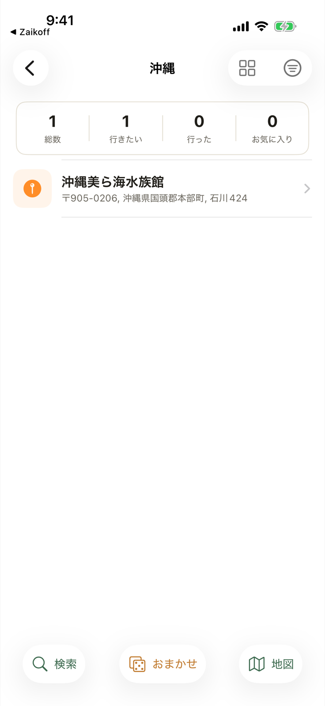
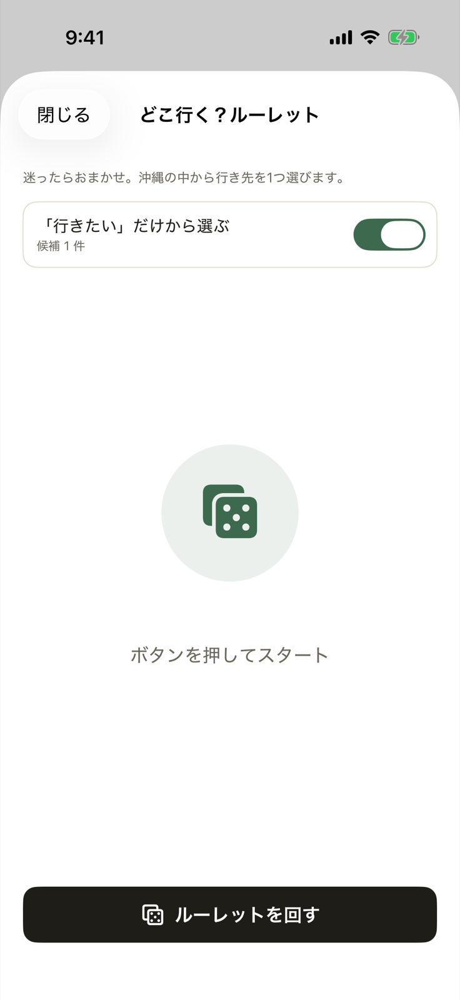
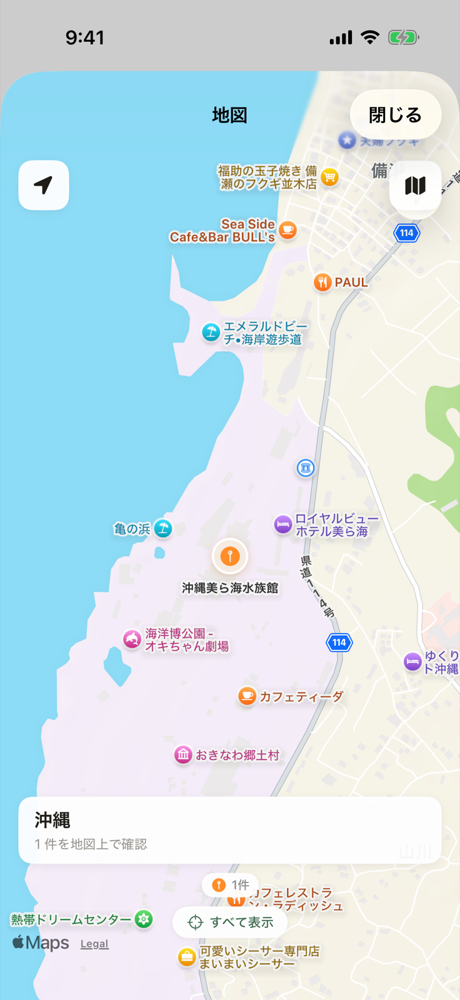

地図で保存
気になる場所を検索し、位置とメモをひとつにまとめます。
どこ行く？
DokoIku
PLACE COLLECTION · おでかけ
気になる場所を地図に残し、誰かと共有しながら次のおでかけを決められる場所リストです。



気になる場所を検索し、位置とメモをひとつにまとめます。
保存した場所を状態や条件で見直しやすく整理できます。
コメントやリアクションを添え、候補をCloudKitで共有できます。
決めきれないときは、保存した候補からルーレットで選べます。
Made for you